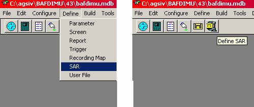
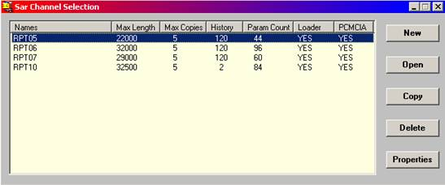
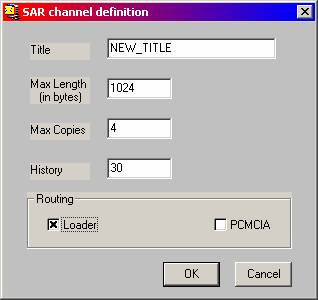
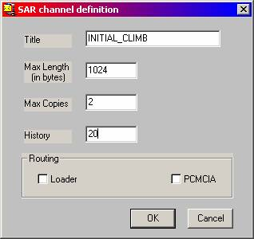
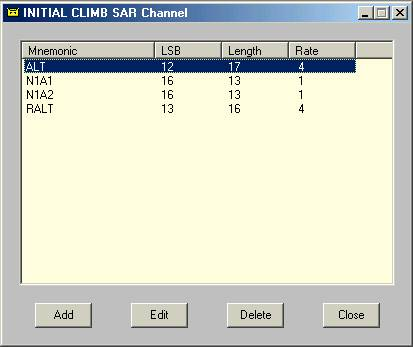
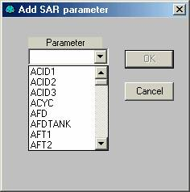
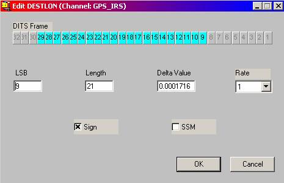

OVERVIEW
This chapter is not applicable to iDMU. SAR recording is another method for collection of parameter values captured at critical or significant points of time during a flight or on the ground. Trigger Definitions enable the application developer to specify the conditions under which a SAR recording is to be generated. SAR recording Definition allows the developer to specify WHAT parameters are to be captured, WHEN, for HOW LONG and, HOW they should be formatted.
Once generated, recording files are retained in the airborne unit for routing to either a Loader and/or Integrated Disk. The specification of which device(s) the file is sent to, in what format, and under what circumstances, is also part of the recording definition process.
SAR recording files, once generated, are saved in the non-volatile memory of the ACMS and thus are not lost with power shutdowns. However, since non-volatile memory capacity is limited, it is necessary to specify, at the recording definition time, how many copies of a recording file are to be retained, for how long, and which copies are to be discarded when the limit is reached.

Figure 7.1: Main Menu and Toolbar with Define SAR selected.
SAR recording definition is usually done in conjunction with the recording trigger definition, but after the parameters needed for the recording are defined. SAR recording definition starts by selecting the SAR option from the Define menu (see Figure 7.1).

Figure 7.2: SAR Channel Selection Window.
Once the SAR recording selection is made, a list of all previously defined SAR channels appears (see Figure 7.2). The list of channel names can be sorted in ascending (or descending) order using the title bar at the top of the list (as described in the Introduction), or scrolled up or down in search of a known recording definition.
Next to this list are a set of buttons that allow the developer to:
define recording channel,
a recording channel,
a recording channel,
an existing channel,
view the of recording definitions for inspection and modification,
this window.
- This selection asks for a SAR channel Title and a few other characteristics (see Figure 7.3). The channel title can be up to ten characters long.

Figure 7.3: SAR channel Name and other characteristics.
Here are explanations of the other fields:
Maximum Length:
should be specified to have a value between 1 and 32768 in bytes increments of storage.
So, if you want 1 Kilobyte of
recording, you need to input 1024 in
this field.
Max Copies: Maximum number of copies kept before re-writing the oldest copy.
History: Length of the buffer of previous samples to be
recorded on triggering of next SAR recording(s). The maximum history allowed is 300
seconds. The minimum is 2 seconds.
Loader and PCMCIA: Selection of the device to which the recordings are routed.
Once the channel title and other characteristics are specified, the application developer should hit and proceed with the definition of the recording, as described later in this chapter.
- To open a channel definition for modification, it must be selected from the list of pre-defined recordings in the system and opened (see Figure 7.2). Once the channel definition is opened and its attributes are modified it should be ed and closed.
- To copy a channel, select (highlight) the channel, and press the button.
- To delete a channel definition, select (highlight) the channel, press the button, and confirm the deletion.
To open a channel definition for modification, it must
be selected from the list of pre-defined recordings in the system and opened
(see Figure 7.2). Once the recording definition is opened, its attributes can
be modified as described later in this chapter.
Channel edit form
Once the channel button is pressed, a dialogue box with several fields is presented to the developer (see Figure 7.4).

Figure 7.4: A typical Channel Definition Dialogue Box.
Any of these fields may be changed using the usual MS Windows techniques.
channel DEFINITION FORM
Once a channel is ed, a dialogue box with a list of parameters is presented to the developer (see Figure 7.5).
Next to this list are a set of buttons that allow the developer to:
 a new parameter to the channel,
a new parameter to the channel,
a selected (highlighted) parameter,
a parameter from the channel, or
the channel altogether.

Figure 7.5: SAR Channel Specification Dialogue Box (ALT entry
high-lighted).
Following are explanations of each of these buttons, see Figure 7.4:
- button is used to a new parameter to the selected channel’s parameter list. Once invoked, a dialogue box similar to the one shown in Figure 7.6 is displayed. At this point the developer has the option of either directly entering a predefined parameter name, or select one such name in the drop down list of parameters provided. Once a name is entered (or selected) use the OK button to close the dialogue box.

Figure 7.6: A Dialogue Box for selecting and Adding a parameter to the
list.
- button is used to specify and/or edit the parameter details. It is also used to define the amount of change that should happen before the next recording of the parameter value takes place.

Figure 7.7: A Display of Parameter characteristics for Editing
purposes.
In response to the pressing of the button, a dialogue box, similar to the one shown in Figure 7.7, is displayed. This box invites the developer to either specify (or re-specify) the parameter bits (DITS Frame) to be recorded and/or the amount of change needed to initiate the recording of a parameter value.
To specify (or change) parameter bits, one should either:
· position and sweep (highlight) the cursor on DITS Frame bits to be recorded or,
· using the LSB and Length fields, directly specify the Least Significant Bit and Length (number of bits) of the selected field.
In either case, the result of the selection is reflected in both fields, see Figure 7.7.
In the same dialogue box, the developer has the option of specifying the amount of change (Delta Value, in Engineering Units), that must occur in order to initiate the recording of the next value. Please note this change is from an expected value calculated by linearly extrapolating from the two latest recordings of the same parameter.
SSM and Sign check boxes refer to the parameter definition
bits that may be asked to be included.
- is used to select (highlight) a parameter and it from the list.
- closes the window.